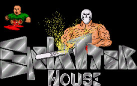

[ DToxR ] Looking back on the history of the scene... what's one thing in particular that sticks with you from the old scene?
[ cool_hand ] Well looping 2 at&t conference calls together 15 nodes and calling 1-900 numbers... actually the teamwork and friendships I had in order to make the whole thing work...
[ DToxR ] Just to put this in perspective... who would you say the "major contenders" were at the time?
[ cool_hand ] It was always INC and THG that counted. Razor 1911 struggled for a bit... at one time it was only INC when THG folded, then Razor came on strong feb 1992. INC and THG did some nasty things to each other but INC always seemed to come out on top, mainly because THG's leader the candyman was an asshole and treated people like shit. It was cool to hang with INC, we had fun with a capital F.
[ DToxR ] What was your favorite release you had a hand in?
[ cool_hand ] I had my hand in over 3000 releases but the best ones were the ones we stole from THG like Red Baron. Here's how hard it was to compete... The humble babe [originally of THG] then [later USA] drove an ambulance for a living and would turn the sirens on to get to UPS when it opened to get her wares!
[ DToxR ] Can you describe the typical release process in "the old days" from pickup to upload?
[ cool_hand ] THG claimed to revolutionize the IBM scene and I will give it to them they did... before them everything came from the stores and they began to buy with cash then we red labeled... so money got involved and it took a treasury of abut 3000 a month to stay on top... in the beginning we had people who worked at EB, Egghead, and walk-ins from local areas... also beta testers at SSI and the company that makes Might & Magic... also Sega and Nintendo... Then they [THG] would get a beta tester busted... we would make a phony newspaper collage and convince places like EA that we write a games section for the paper and wanted to try out new releases they would send them to us... we had a guy who reviewed games for Gaming Monthly...
[ DToxR ] Where did the funding come to keep the releases flowing?
[ cool_hand ] Money came from members and from sysops, the scene was so cool that people would give money and hardware just to have a mention in one of our nfos. THG and Razor sold t-shirts [which was lame]... What ever they could contribute, if they did not have anything that was fine... everybody did what they could to stay #1.
[ DToxR ] Geographically, was there any one central area that you could pin down as "the heart of the scene" at the time?
[ cool_hand ] In the beginning San Jose, then Dallas and New York but THG was Tenn. USA was Seattle I think... but Dallas has had a lot of people involved...
[ DToxR ] How aware was the general populace of this underground scene? Did the cops have a clue?
[ cool_hand ] They only knew what people told them, they basically were not interested. Carding and phreaking kept them busy...
[ DToxR ] Would you say some basic phreaking skills were a requirement at the time due to the limitations of area codes/LD?
[ cool_hand ] Well the rule was "don't wear out a code and don't do it if you're over 18."
[ DToxR ] Was there any action going on in Europe at this time or was it mainly centered in North America?
[ cool_hand ] Well Europe was pretty lame for a long time... But game marketing changed and games started being released first overseas. Bullfrog in England was a good source... The first big Eurorelease I remember was Ultima 7.
[ DToxR ] Can you remember the PC you "entered the scene with?" =)
[ cool_hand ] Oh yea, a hyundai 8088 XT - ran my first bbs which was awesome on a 30 meg hd. First giant release I remember was a 7 720 meg game called "Codename Iceman"...
[ DToxR ] I remember that release.

[ cool_hand ] An INC release supplied by someone from Dallas. I had a 2400 at first, then I was the second person next to Freddy Krueger Elm Street to get a usr 9600 Bps modem. I was something special with that modem... 2nd in my area code. My highest phone bill for the month was $2700 dollars in ld calls.
[ DToxR ] OUCH! =)
[ cool_hand ] How long you been in the scene?
[ DToxR ] Been in the scene...hmmm... I have 5 1/4 inch disks still with old warez on them...
[ cool_hand ] What was you first cracked game released by a group that you remember?
[ DToxR ] My favorite old warez games... Populous, Double Dragon...I remember that Codename Iceman game specifically, but I dunno, I have a bad memory...
[ cool_hand ] Populous was an INC game and Double Dragon was a game that PTL released a long time ago. A certain few ruled the whole damn world with warez, Russia, Germany, Italy, and Portugal, all these people kissing your ass in different languages, it was awesome... just rambling...
[ DToxR ] So was it always a bit about the power trip?
[ cool_hand ] Why of course, it's alot of that and the camaraderie...
[ DToxR ] What do you attribute your success in the scene to? Dashing good looks, etc? *grin*
[ cool_hand ] Hard work... sacrifice... dedication... and no sleep...
[ DToxR ] I assume you are in some sort of career now... have you been able to make use of any warez related skills in your post-scene life?
[ cool_hand ] It's gotten me several jobs... I once told a boss that I had DOS 5.0. He said, "No you don't" and I said, "If I do, then I get the job". He agreed and I brought it to him the next day... and got the job, you know we get things early.
[ DToxR ] What names would you pick out as "innovators," or people who made a significant impact on the scene?
[ cool_hand ] candyman, line noise, slavelord (used to be known as timelord), hardcore, genisis, humble babe, thecracksmith
[ DToxR ] What did they contribute?
[ cool_hand ] Well they all dedicated a good part of their lives and money to make things work...
[ DToxR ] Ok, gotta ask this one... did being the leader of INC ever get you any nookie? =)
[ cool_hand ] Nah, I am married, but there was one of the first girls on the scene from AZ that was giving it out to all INC members. And once magnum and I fought over a topless dancer one night at a party with the bar manager...
[ DToxR ] Ok, Joe Lamer from #freewarez asks you "How can I be successful in the scene?" How do you reply?
[ cool_hand ] CONTRIBUTE
[ DToxR ] In your experience, what % of any given release crew carries the group...?

[ DToxR ] What's the craziest stunt you ever pulled online...?
[ cool_hand ] The 911 virus
[ DToxR ] What's the story behind that?
[ cool_hand ] Some hacker in the group, night ranger or somebody, wrote this virus that dials 911 when it finds a modem. We put it in a ware that was given to THG which they released. I know several of them got visits from the cops and they had no idea what was going on...
[ DToxR ] What was the thing you disliked most about the scene?
[ cool_hand ] Money got involved and people who ragged or complained about warez we bought with our money and busted our asses to get out phone bills to spread... free to them and they complained that the game sucked, like we wrote it or the crack did not work, that's my biggest peeve.
[ DToxR ] Btw, how the hell did you manage to pay $2000 phone bills!??
[ cool_hand ] Took three months without a phone...
[ DToxR ] What do you think of current efforts to unite various sectors of the scene under one cooperative umbrella? art, demo, music, warez....
[ cool_hand ] Been tried been done doesn't work too many egos and too many people wanting to be in charge... kinda like the real world... It becomes an empire and we know what happens to empires, they fall.
[ DToxR ] What do you think of scenelink?
[ cool_hand ] I think magazines are an important part of the scene, they're a way to get messages out, get rid of rumors, and provide a way for old timers like myself to have one last moment of glory...
[ DToxR ] Well, you have a lot of good stories to tell, and us youngsters can always learn a thing or two from someone who's been there before.
[ cool_hand ] Yea more good times than bad...
[ DToxR ] Last Q, is there such a thing as life after warez? *grin*
[ cool_hand ] Sure, I have an ftp site that I've had for a long time... it's pretty awesome to boot... would also like to get involved in a group again too. I have lots to offer... but it would have to be a group that is serious...
[ DToxR ] Do you see yourself becoming active again anytime in the future?
[ cool_hand ] Maybe. You never know. I haven't really been asked...
Edited by DrJekyll